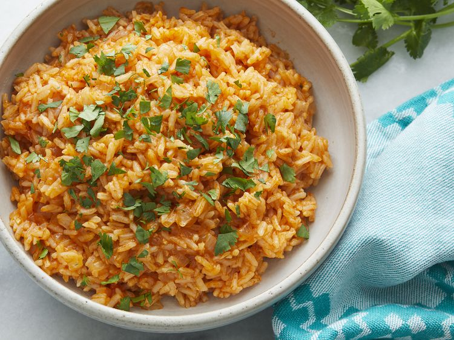
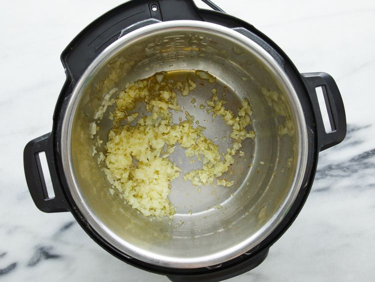
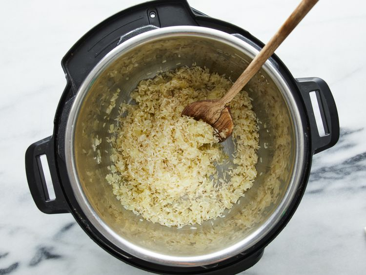
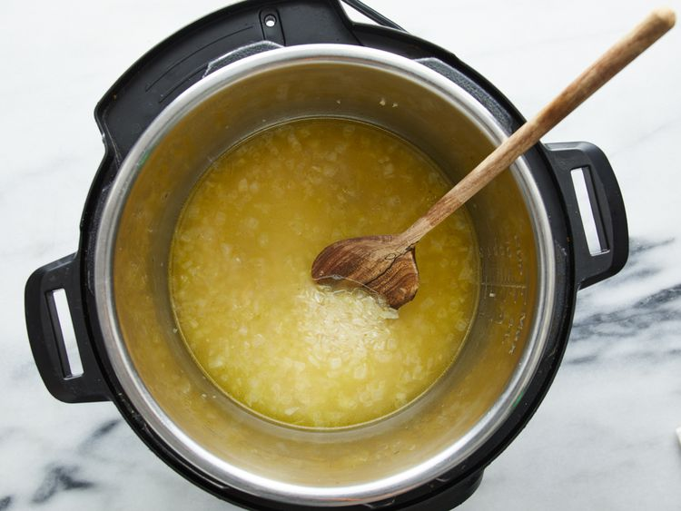
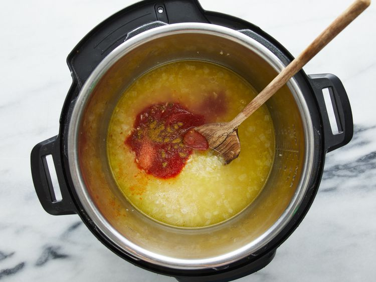
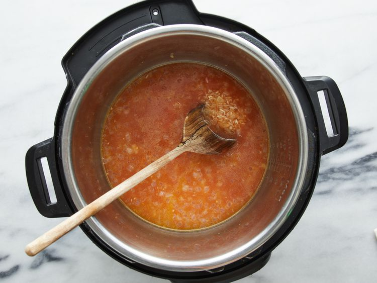
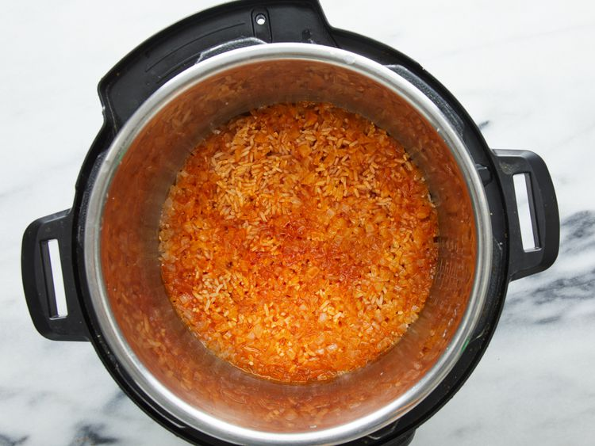

Recipe with proper details
Make Spanish rice in an Instant Pot for a wonderful side dish for any Mexican meal.

| Prep Time: |
Cook Time: |
Additional Time: |
Total Time: |
Servings: |
| 10 mins |
20 mins |
5 mins |
35 mins |
4 |
Why You'll Love This Recipe
- Sautéed onion and garlic add aromatic depth to this flavorful rice dish.
- Reviewers recommend not stirring in the tomato sauce to avoid burn errors.
- "Definitely going into the recipe pile for favs," writes Allrecipes member Kina Michelle.
Ingredients
- 1 tablespoon avocado oil, or more as needed
- ½ medium onion, finely chopped
- 2 large cloves garlic, minced
- 1 cup long-grain rice
- 1 ½ cups low-sodium chicken stock
- ½ cup tomato sauce
- 1 teaspoon salt
- ¼ teaspoon ground cumin
- 1 pinch cayenne pepper
Directions
- Turn on a multi-functional pressure cooker (such as Instant Pot); select sauté function and adjust to medium.
- Cover the bottom of the pot with avocado oil. Cook and stir onion until soft, 4 to 5 minutes. Add garlic and cook until fragrant, about 30 seconds.

- Add rice to the pot; mix until coated with oil and lightly browned.

- Pour in chicken stock; stir any browned bits off the bottom of the pot.

- Mix in tomato sauce, salt, cumin, and cayenne pepper.


- Close and lock the lid. Seal the vent and select high-pressure function. Set a timer for 7 minutes; allow 10 to 15 minutes for pressure to build.
- Release pressure carefully using the quick-release method according to the manufacturer's instructions, about 5 minutes. Unlock and remove the lid. Stir rice before serving.

Nutrition Facts(per serving)
| Calories: |
Fat |
Carbs |
Protein |
| 225 |
4g |
41g |
5g |
HOME PAGE